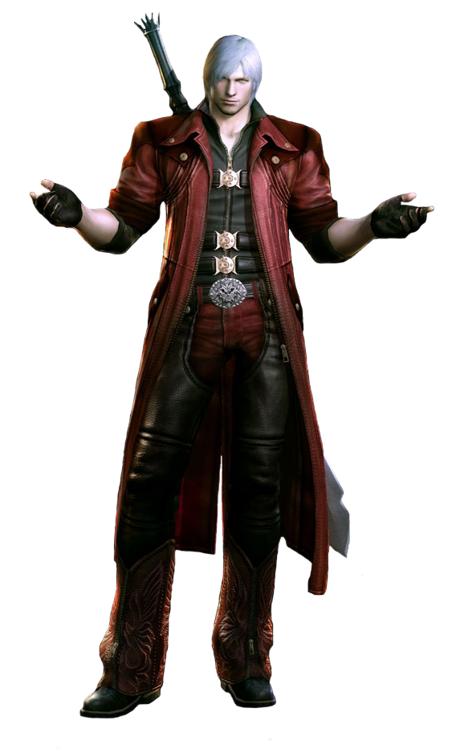

Blogginlägg:
En länk till labb 3.3 CopyCat då man skulle göra en CSS fil till ett färdigt HTML dokument. Länk till labben. Devil May Cry
Devil may cry aka DMC är en till helvetes bra spel serie som jag har spelat/ spelar. Dock den senaste realsen av spel serien skapade ett stort hat bland en stor mängd av spelets följare.
Varför? I alla DMC spel, 1-4, så har man spelat delvis eller hela tiden som karaktären Dante, en nephalem dvs. halv demon och halv ängel, och är ett badass och slaktar demoner efter demoner och bossar som är stora som skyskrapare och vissa kan visa sig vara en enorm utmaning. Så vad är det dem gjorde för att få allt detta hat om det sista spelet inom DMC serien som släpptes Januari 2013?De ändrade huvudkaraktären, istället för att spela som den medelsåldriga 30+ badass med några av de bästa one-liners jag någonsin hört (han på bilden) så spelar man honom som tonårng. Då han startar av som en rejäl douche med one-liners som en 12-åring skulle kunna komma på så jo, hans attityd blev bättre mot slutet. Men det var inte den Dante som man har lärt sig känna och spelat som.
Jag köpte nyligen spelet för att det var p rea, och helt ärligt så gillade jag det. Det var helt värdelöst när det kom till storyn, karaktärerna var inte intressanta, men det var ett bra action RPG Hack'n'slash. Det var lätt att få höga poäng, och jag hade inte dirket några problem med några bossar eller något av det liknande. Men det var ett ganska chill spel, man kunde bara sitta med det och ta det lungt. Ingen stress eller extrem utmaning som i DMC 1 då en miniboss kan döda en på 4 slag och tar flera minuter att döda. Jag skulle nog dock aldrig rekomendera att köpa det för fullpris. Det var inte lika långt som de förra heller.Slut bedöming? Köp det inte för att du vill följa DMC serien, köp det under rea för några timmars rolig underhållning av att döda demoner. Det ända man får ifrån storyn är hur Dantes hår blev grått.
Tack till http://www.bigbuckbunny.org/ för lånet av videon.
SVG-bild